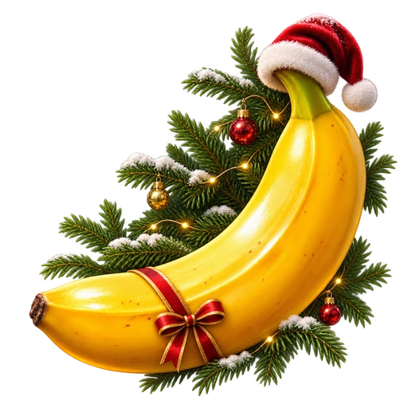
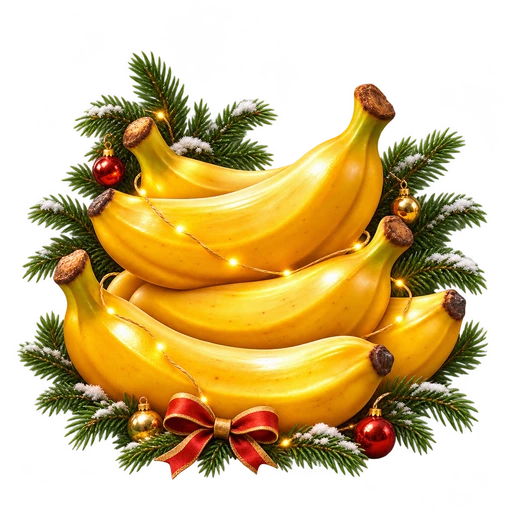
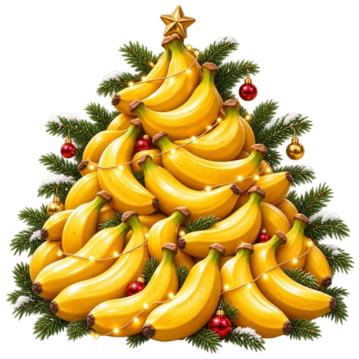
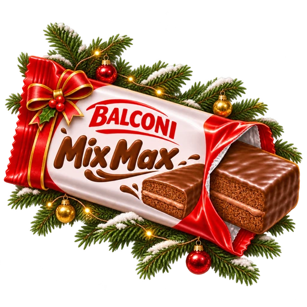
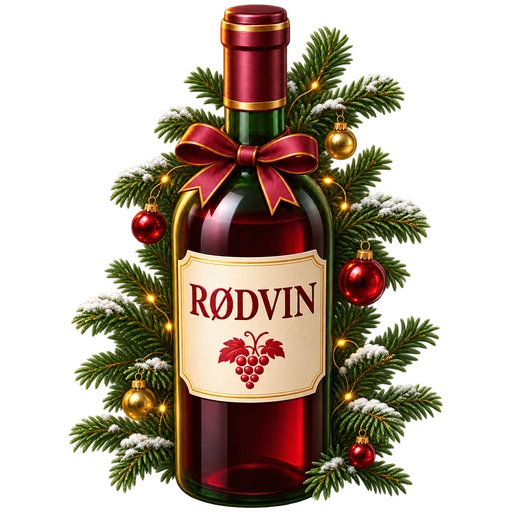
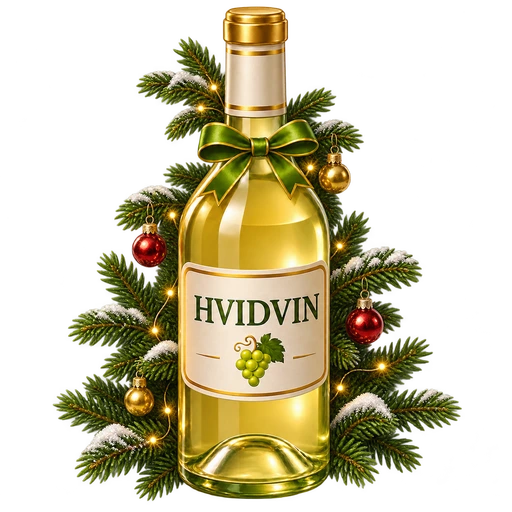
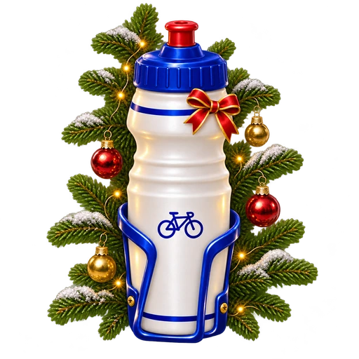
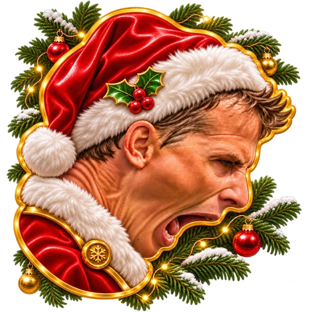

Julekalenderens præmieikoner
Julegran, små lys og pynt · fri silhuet med transparent baggrund · beløb ikke fastlagt








Julegran, små lys og pynt · fri silhuet med transparent baggrund · beløb ikke fastlagt







